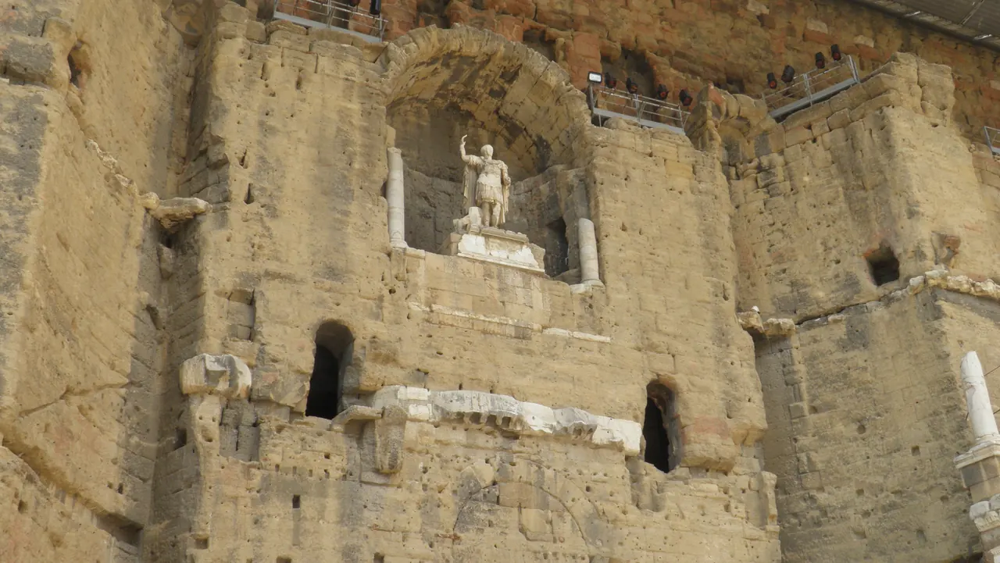

{kind=link}
관광·미술관
Nous avons déjà des billets.
이미 표가 있습니다.
누 자봉 데자 데 비예

Orange의 로마극장은 고대 로마 극장 중 무대벽이 높은 형태로 남아 있는 대표 유적이다. 객석에서 무대벽의 규모와 음향을 체감하는 단일 방문만으로도 장소의 정체성을 충분히 이해할 수 있다.
이번 일정에서는 Les Baux에서 Orange로 가는 우회가 크다. 유적의 가치와 Day의 우선순위는 별개이므로 MUST로 승격하지 않는다.
| 예약 | 실행 당일 Théâtre antique 운영시간·마지막 입장을 공식사이트에서 재확인 재확인 |
|---|---|
| 소요시간 | Théâtre antique 단일 목적 60–75분 재확인 |
| 메모 | Saint-Rémy와 Les Baux를 충분히 마친 경우에만 실행하는 Bonus. 늦으면 즉시 삭제 재확인 |
Saint-Rémy 시장과 Les Baux의 핵심을 충분히 마치고 16:00~16:30 현장 판단에서 체력·교통·일몰이 모두 괜찮을 때만 실행한다. Day 20에도 로마유산이 있어 필수 요소가 아니다.
극장의 핵심은 객석보다도 무대 뒤를 막는 거대한 석조벽이다. 장식과 조각의 상당 부분이 사라졌어도 벽의 높이와 비례가 고대 공연장의 닫힌 공간감을 보여준다.
Saint-Rémy와 Les Baux는 같은 Alpilles 축이지만 Orange는 Avignon 북쪽이다. 왕복 운전량을 크게 늘리므로 시간과 피로의 비용을 명시적으로 감수할 때만 방문한다.
| 항목 | 상세 정보 |
|---|---|
| 위치 | Rue Madeleine Roch, 84100 Orange |
| 권장 체류 | 60–75분 |
| 방문 범위 | Théâtre antique 단일 목적 |
| 예약 | 당일 운영·마지막 입장과 티켓을 출발 전에 확인 |
| 운전 | Les Baux에서 약 55분, Orange에서 Avignon 약 30분 예상 |
Nous avons déjà des billets.
이미 표가 있습니다.
누 자봉 데자 데 비예
On peut prendre des photos ?
사진 찍어도 되나요?
옹 푀 프랑드르 데 포토
Où commence la visite ?
관람은 어디서 시작하나요?
우 코망스 라 비지트

높이 15m 거대한 지하 백색 석회암 채석장 동굴 전체를 디지털 캔버스로 변모시킨 세계 최초·최대 규모의 몰입형 미디어 아트 공간. 7,000㎡ 암벽과 바닥을 감싸는 빛과 음악의 향연.

기원전 6세기 켈트 성소에서 헬레니즘 도시를 거쳐 로마 제국의 온천 휴양도시로 번영했던 거대한 고대 발굴 유적지. 갈리아에서 가장 완벽하게 보존된 기원전 1세기 로마 영묘와 개선문 '레 장티크(Les Antiques)'.

알피유(Alpilles) 산맥 해발 245m 석회암 절벽 위에 우뚝 솟은 중세 독수리 요새 마을. 자연 암반과 성벽이 하나로 결합된 레보 성채(Château des Baux) 폐허와 올리브 계곡 대파노라마.

세계적인 식물학자 파트리크 블랑의 300㎡ 거대한 수직 정원(Mur Végétal) 외벽 아래 40여 개 프로방스 전통 식재료 좌판이 모인 아비뇽의 활기찬 실내 중앙 미식 시장.

14세기 가톨릭 교황청이 로마를 떠나 68년간 머물렀던 서유럽 최대의 중세 고딕 요새 궁전. 베네딕토 12세의 구궁전과 클레멘스 6세의 신궁전, 마테오 조바네티의 프레스코화와 히스토패드 3D 증강현실 복원.

12세기 론(Rhône) 강을 건너 교황령 아비뇽과 프랑스 왕국을 잇던 920m의 유일한 석조 다리. 소빙하기의 거센 홍수로 22개 아치 중 4개와 2층 생니콜라 예배당만 남은 유네스코 세계유산.